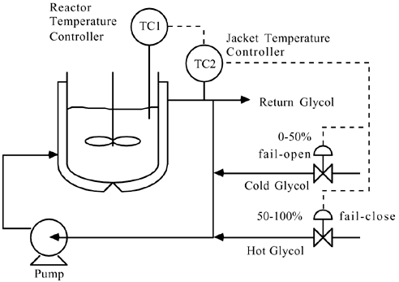
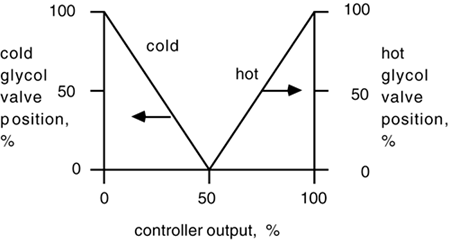
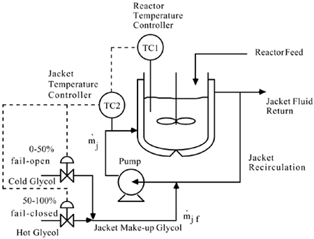

| [ Team LiB ] |
|
M11.1 BackgroundJacketed batch chemical reactors are often used in the pharmaceutical and specialty chemicals industries. Very often these reactors need to have both "heating" and "cooling" modes. That is, the temperature of a reactor is often ramped up from the ambient reactor charge conditions (near 20°C) to a temperature where the reaction begins to "take off." If the reaction is exothermic, the heat released through the reaction must be removed by circulating a cold fluid through the jacket. A common strategy is shown in Figure M11-1, where both hot and cold jacket feed streams are available. Here we have shown a split-range jacket temperature control strategy. When the jacket temperature controller output is between 0 and 50%, the cold glycol valve is open. When the jacket temperature controller output is between 50 and 100%, the hot glycol valve is open. The split-range behavior is shown in Figure M11-2. Notice that the cold glycol valve is fail-closed, while the hot glycol valve is fail-open. Figure M11-1. Batch reactor temperature control. The jacket temperature controller has a split-range output, where the cold glycol valve is open during "cooling mode" and the hot glycol valve is open during "heating mode." Figure M11-2. Depiction of the split-range controller action. An alternative approach is for the reactor temperature controller output to be the setpoint to a jacket inlet temperature controller, as shown in Figure M11-3. In Section M11-2 we will focus on the strategy shown in Figure M11-1. Simplifying assumptions will be used to ease the design of the reactor temperature controller, and to better understand the efffect of reactor scale. Figure M11-3. Batch reactor temperature control. The jacket inlet temperature controller has a split-range output, where the cold glycol valve is open during "cooling mode" and the hot glycol valve is open during "heating mode." |
| [ Team LiB ] |
|